Running on nullplatform · in production
AI workflows
A few examples of what you can do with workflows — live on our own production.
Deployments Analyzer
Every deploy, explained
The moment a release reaches production, it gets analyzed: the full change set since the previous deploy, an AI-written summary of what actually shipped, and a risk score with its rationale.
Know what shipped, who shipped it, and how risky it was
- Full diff between deploys: PRs, commits, contributors and files changed
- Risk scoring — low / medium / high — with a written rationale per release
- Functional summaries per deploy, per app, per namespace, plus weekly rollups
- All metadata lands in the lake, ready to query
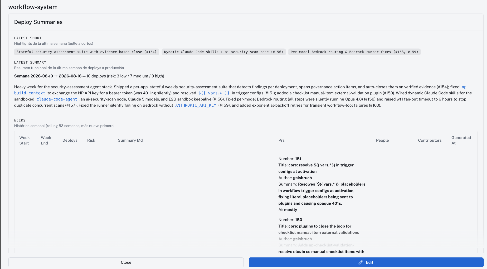
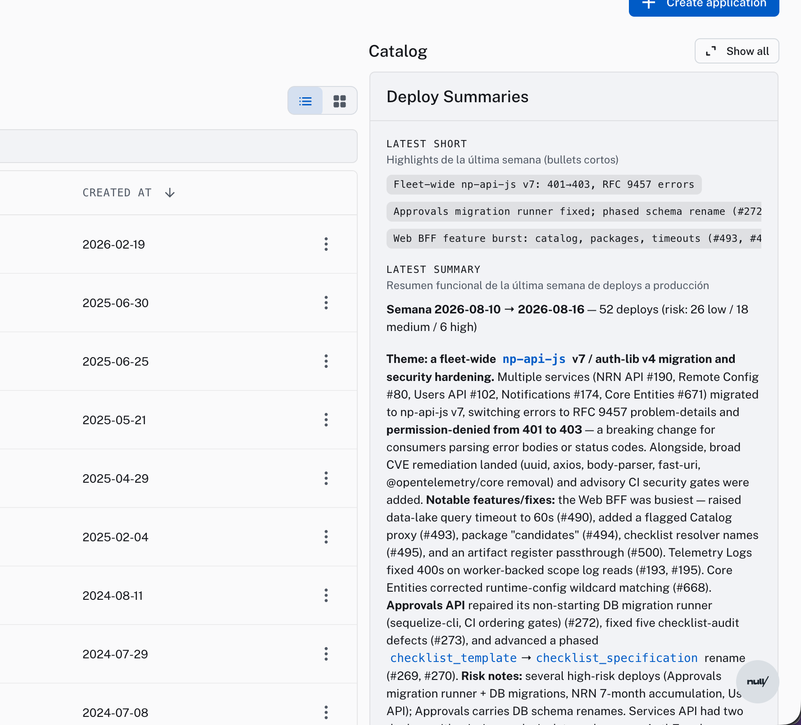
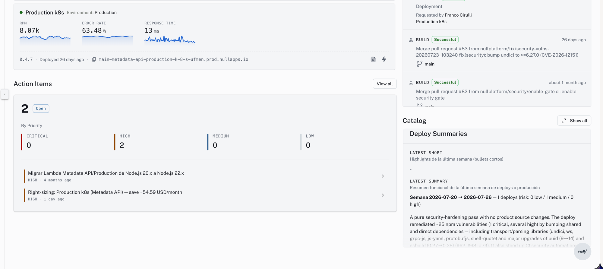
Engineering insights
From deploy data to team pulse
Because every deploy is analyzed, the numbers your team argues about are already there: who ships, who reviews, who unblocks whom, and how long code takes to reach production.
- Contribution & collaboration: PRs authored, reviews and approvals per person
- Change categories per deploy: feature, bugfix, security, infra, refactor…
- Lead time from first commit to production, review time, merge-to-prod
- AI-assisted PR share — measure how much of your delivery is agent-driven
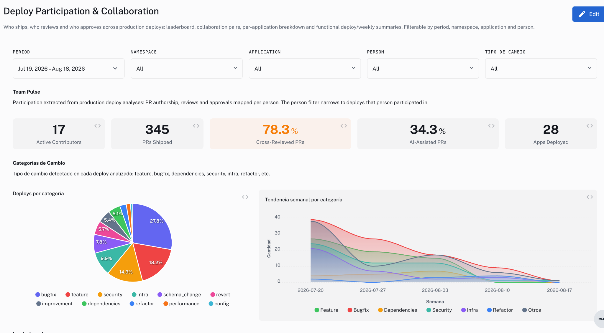
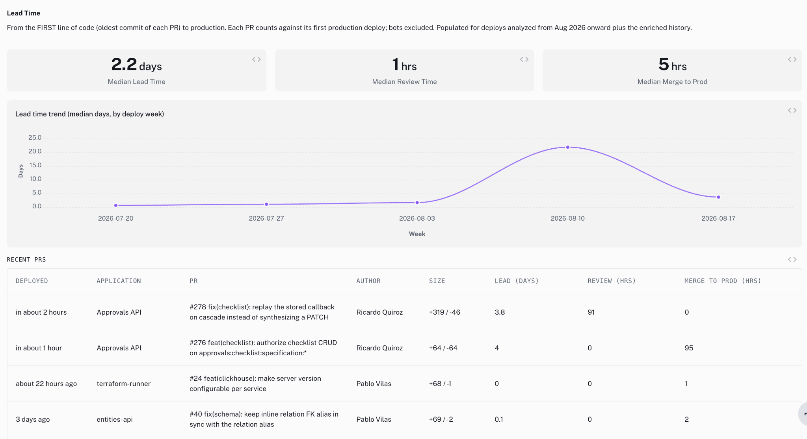
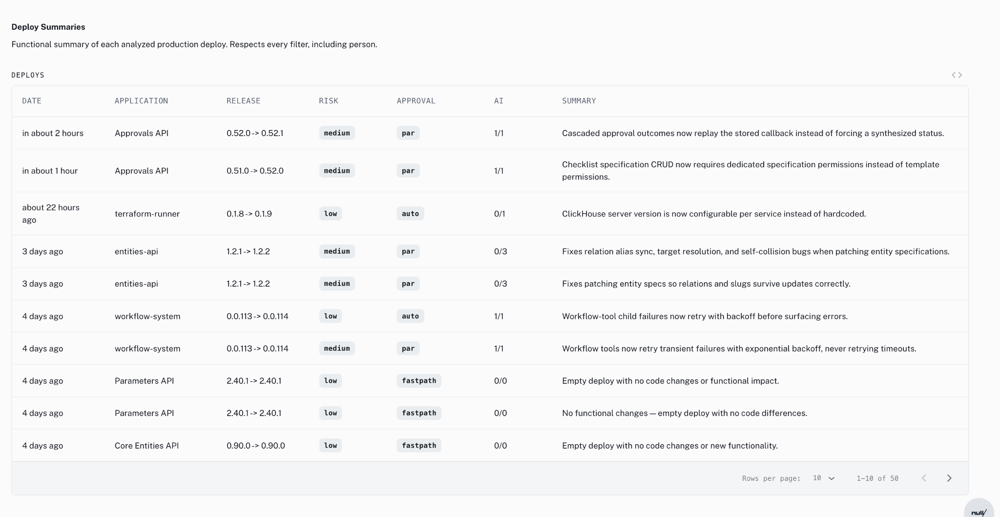
Library Analyzer
“Who uses this?” answered in seconds
Every release records its full dependency tree — internal libraries especially. When a security incident lands or a breaking change is coming, you know exactly which apps, versions and namespaces are affected.
Adoption, drift and blast radius per library
- Adoption per library: which apps use it, on which version, in which namespace
- Version drift: how many distinct versions coexist across applications
- Criticality computed from how far behind each app is: latest, intermediate, critical
- Internal vs external split across the whole dependency surface
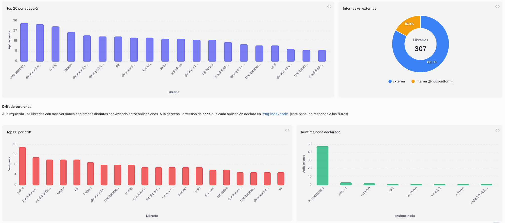
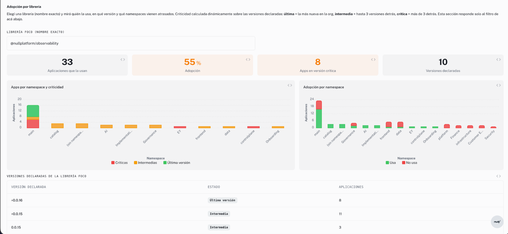
Cost Intelligence
Costs, waste, and what to do about them
Cost tracking per application, scope and namespace — real usage versus waste, down to blended millicore-hour pricing. And it doesn’t stop at dashboards: right-sizing agents open action items with estimated savings and full rationale.
From breakdowns to action items
- 30-day cost breakdowns by account, namespace and application
- Real usage vs waste per day, with an org-level efficiency score
- Provisioning state per scope: over-provisioned, optimal, under-provisioned
- Auto-generated right-sizing action items with estimated monthly savings
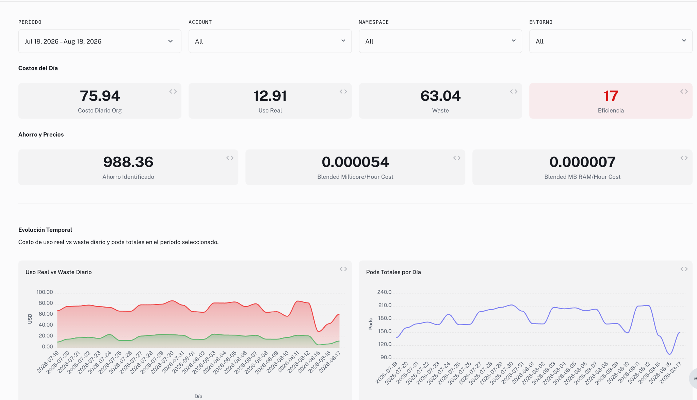
Right-sizing agents
Savings with a rationale, not just a number
Each opportunity arrives as an action item: current requests vs actual fleet usage, the recommended request, estimated monthly savings, confidence, and the risk signals that were checked before recommending anything.
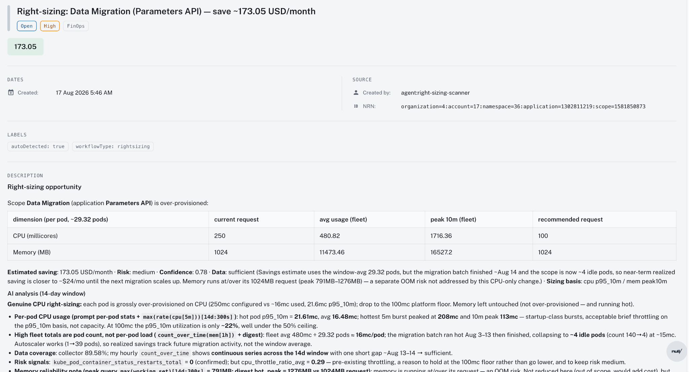
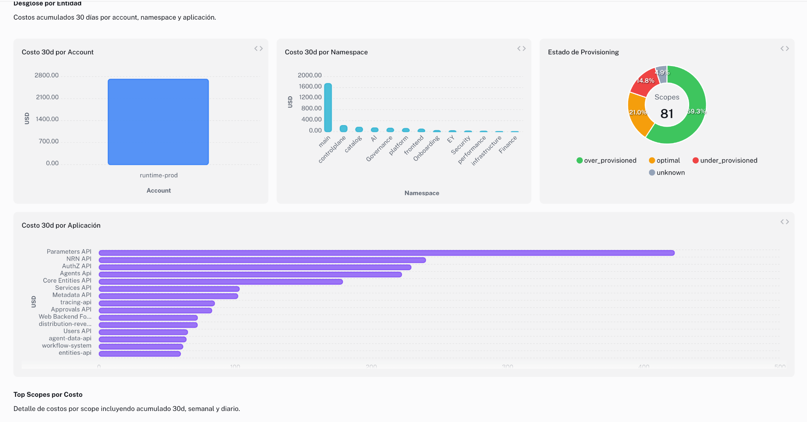
Self-Documenter Experimental
Documentation that writes itself
An evolution of the Deployments Analyzer: it reads every application and its relationships and builds a living catalog — internal docs, dependency maps, and infrastructure detected outside the platform. Humans stay in the loop: your team’s knowledge feeds back into every scan, making it more precise each time.
A catalog your team didn’t have to write
- Auto-built component catalog: overview, architecture, data, security, risks per component
- Relationship maps: APIs consumed, internal libraries, services and scopes
- Flags potential infrastructure living outside nullplatform
- Human-in-the-loop curation: observed, joined, AI-inferred and refuted facts are labeled
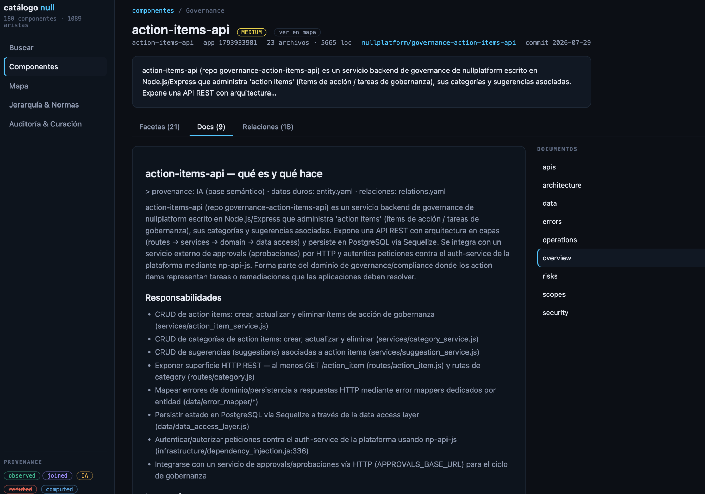
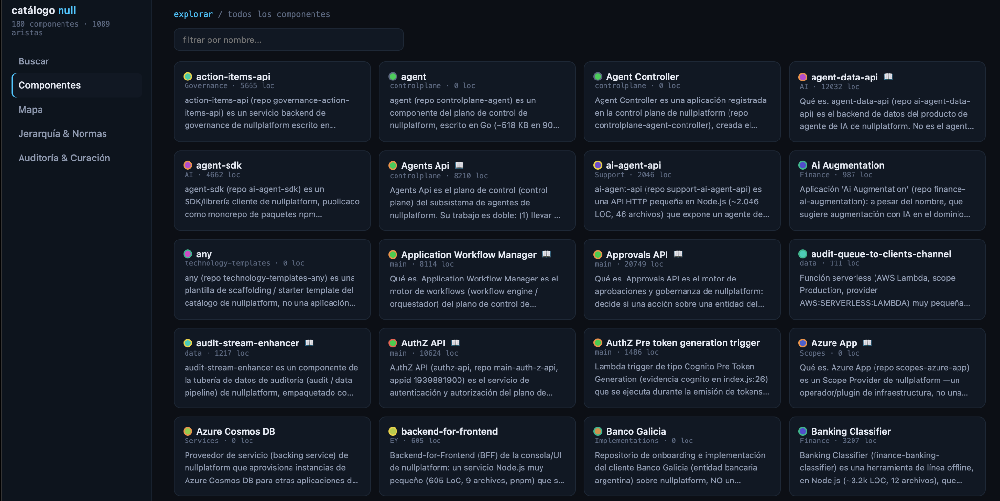
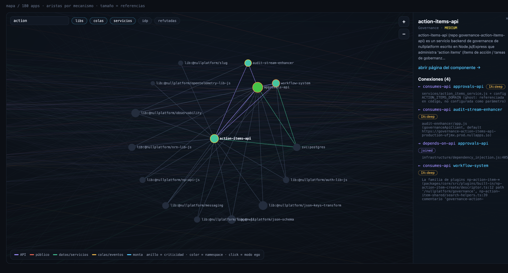
Smart Checklists
Approvals that check themselves
The new approvals mode: build checklists that integrate with Jira, request peer validations, and run automatic checks — with AI and against external services — before anything reaches production.
Risk decides who approves
- Change analysis & risk matrix: the accumulated diff decides what the release needs
- Pair approval required only when risk demands it — fastpath when it doesn’t
- Automatic validations with AI and against external services
- Every decision, override and rationale in the audit trail
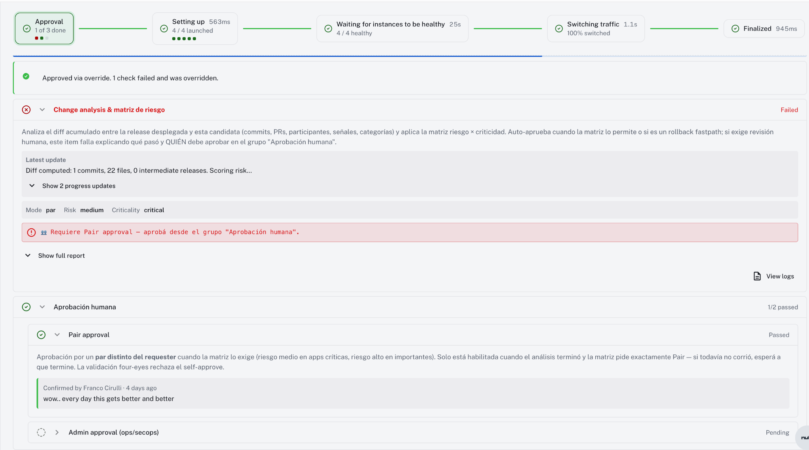